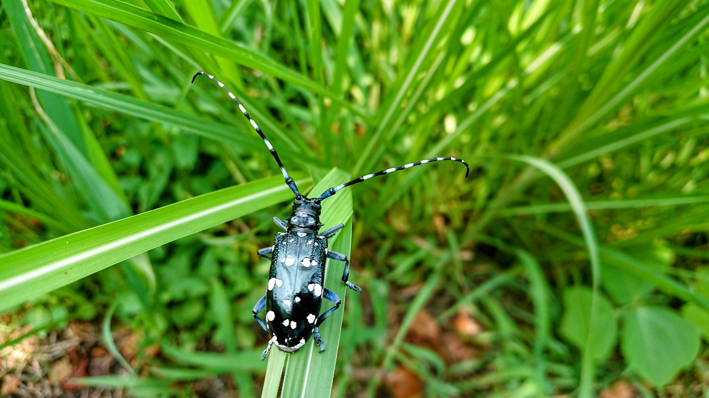

Yui Hayashi

Affiliation
- 4/2022〜 Master's Course, Graduate School of Frontier Science : Department of Complexity and Engineering, The University of Tokyo
Self-Introduction
I am studying data analysis using Bayesian statistics.
Recently, I am interested in Bayesian neural networks and reinforcement learning.
Conference/Symposium
- Yui Hayashi, Shun Katakami, Shigeo Kuwamoto, Kenji Nagata, Masaichiro Mizumaki, and Masato Okada,
Bayesian Inference for Small-Angle Scattering Data,
Information-Based Induction Sciences and Machine Learning (IBIS2022), TSUKUBA International Congress Center, 2-010, 11/2022．
Contact